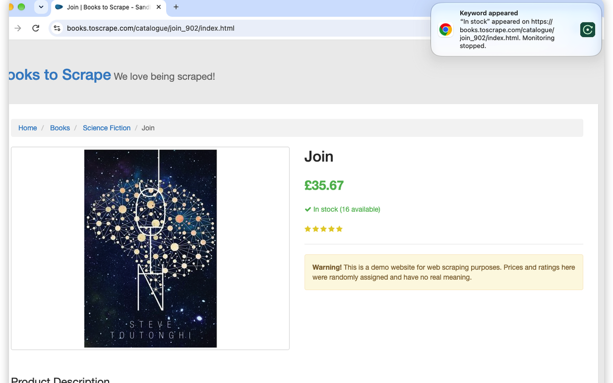
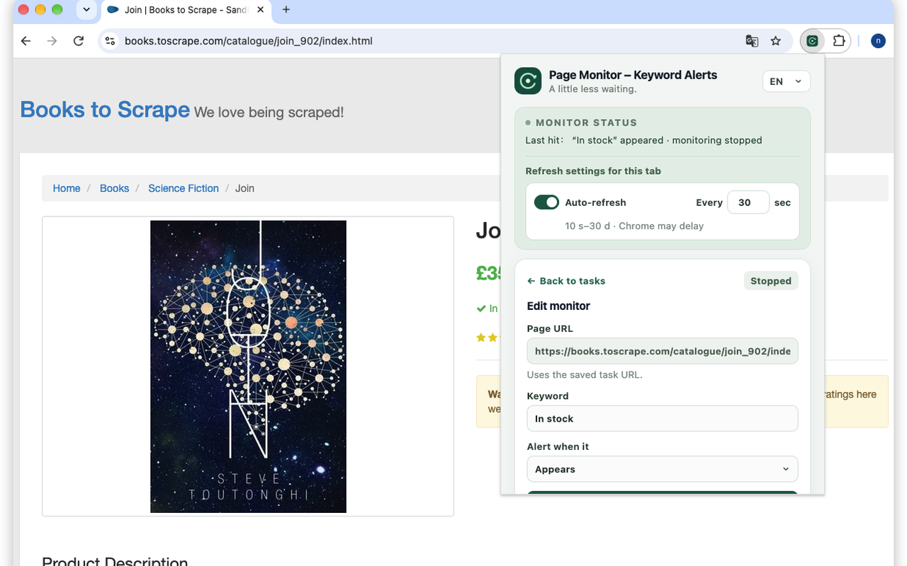
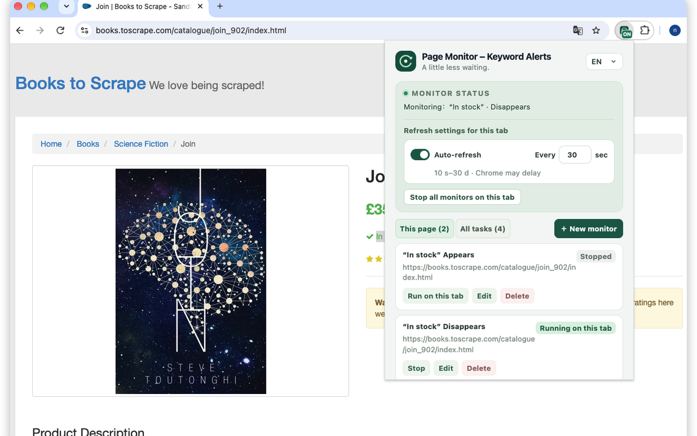

Watch a page, so you don't have to.
Page Monitor – Keyword Alerts is a Chrome extension that reloads the page you choose, at the interval you set, and checks it for a keyword you care about. The moment the keyword appears — or disappears — it tells you three ways at once: a desktop notification, an alert sound, and it brings that tab to the front, then stops.
Get it on the Chrome Web StoreFree · No sign-up · Runs 100% locally in your browser

What it does
Auto-refresh any page
Reloads any tab at your interval — from every 10 seconds to every 30 days — using Chrome alarms, so timing survives the browser's sleep cycles.
Keyword alerts, both directions
Alert when a word appears, or when it disappears. A disappearance only counts after the word was actually seen first — no false alarms from pages that never had it.
Instant triple alert
On a hit: desktop notification + alert sound + the monitored tab focuses itself — then monitoring stops on its own. No nagging on every refresh.
Saved monitoring tasks
Save a task (page + keyword + mode) once and restart it in one click later — even after the original tab was closed.
Several pages at once
Monitor multiple tabs in parallel, each with its own keyword and refresh interval, with a clear per-tab ON badge.
Catches live changes too
If a page updates itself without reloading, the change is detected as well — refresh is only one of the ways it watches.


Good for
Waiting for a price to change or an item to come back in stock
Watching a booking, status, or announcement page for one key word
Noticing when a notice, error message, or “sold out” label disappears
Private by design
Everything runs locally in your browser. There is no account, no server, no tracking, and your pages and keywords never leave your device. The extension starts with access to no websites at all — it asks permission for a site only when you start monitoring a page on it. See the Privacy Policy for details.
Pricing
Free
$0
- Auto-refresh at your interval (10 seconds – 30 days)
- Keyword alerts: appears & disappears
- Notification + sound + tab focus on a hit
- Saved monitoring tasks, one-click restart
- Parallel monitoring on multiple tabs
- No account, no tracking, local-only
Pro
$4.99 one-time · launch price $2.99
- Everything in Free, with higher limits (unlimited parallel monitors and saved tasks)
- Randomized refresh intervals
- Price & number threshold alerts (e.g. “below $500”)
- Off-device alerts via a webhook or Telegram you configure
- Multiple keywords per task, repeat-until-acknowledged alerts
Pro is not on sale yet. When it launches, checkout and payment will be handled by Creem (see the Refund Policy).
Contact
Questions or support: duesue@gmail.com